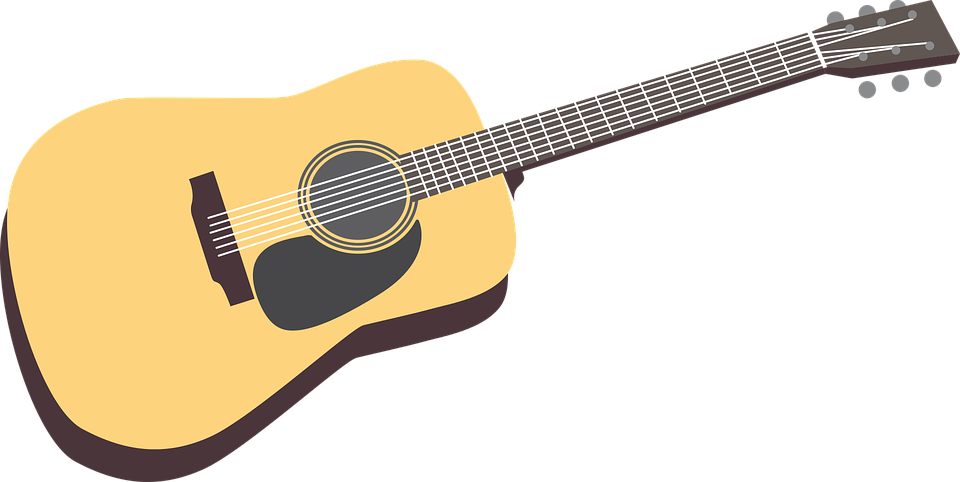

Gitarr
Gitarr tillhör familjen stränginstument som består av en resonanslåda och en lång hals med en greppbräda. Resonanslådan är ett ihåligt utrymme som förstärker ljudet genom resonans. Formen är bidragande till hur olika ljudfrekvenser förstärks. Greppbrädan är till för att spelaren kan välja ton genom att trycka en valbar punkt mot en underliggande yta.
Olika slags gitarrer är exempelvis elgitarr och klasisk gitarr. Gitarren har oftast sex strängar.
Den moderna gitarren har troligen sitt ursprung i Spanien, där den har använts sedan 1200-talet. Ordet gitarr kommer från det spanska ordet guitarra som kommer i från andalusisk arabiska. Som i sin tur kommer ifrån det grekiska ordet κιθάρα där ordet betyder stränginstument.
